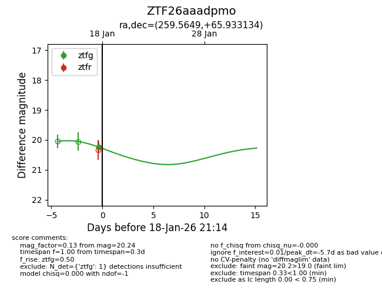
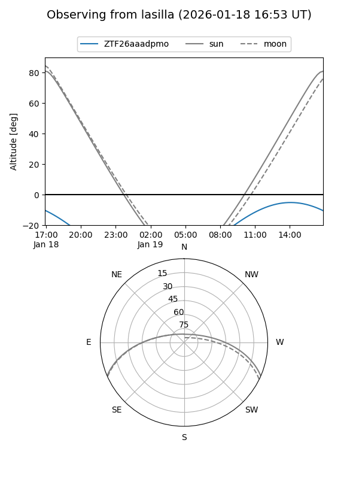
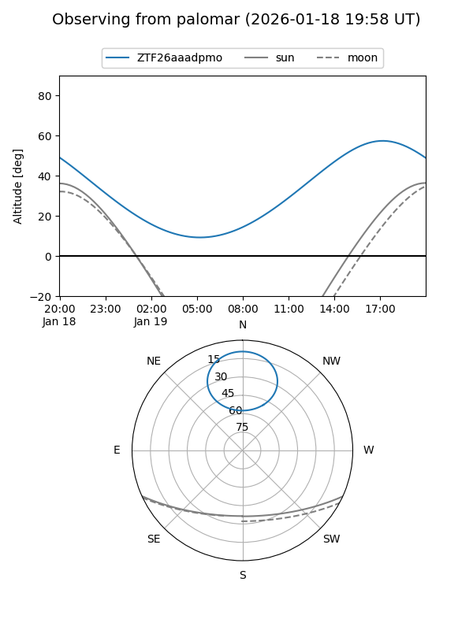
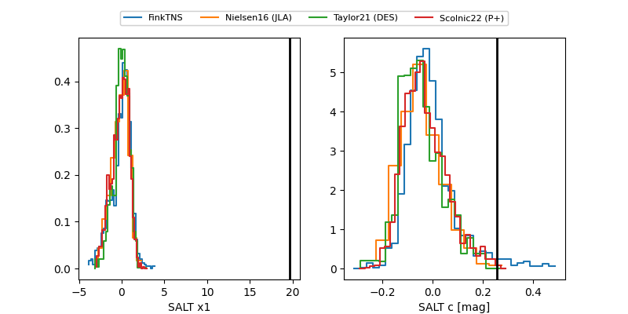

ZTF26aaadpmo
Target ZTF26aaadpmo at 2026-01-18 13:55
Aliases and brokers:
FINK: link
Lasair: link
ALeRCE: link
alt names
ZTF26aaadpmo (ztf,fink_ztf)
Coordinates:
equatorial (ra, dec) = 259.5649,+65.93313
equatorial (HMS+DMS) = 17:18:15.57,+65:55:59.28
galactic (l, b) = (96.0566,+34.04701)
Flags:
Photometry:
last ztfg=20.24
1 ztfg detections
Lightcurve

Visibility


Additional plots
